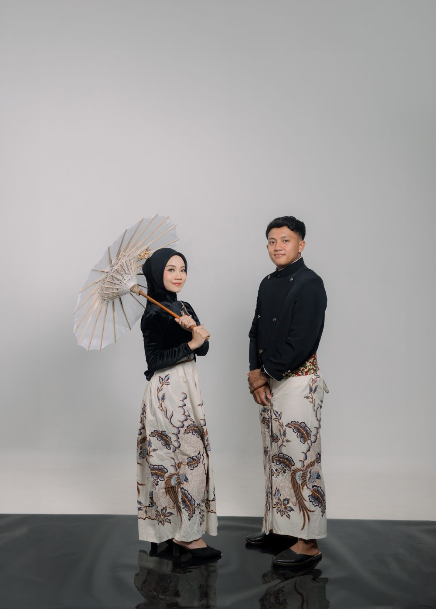
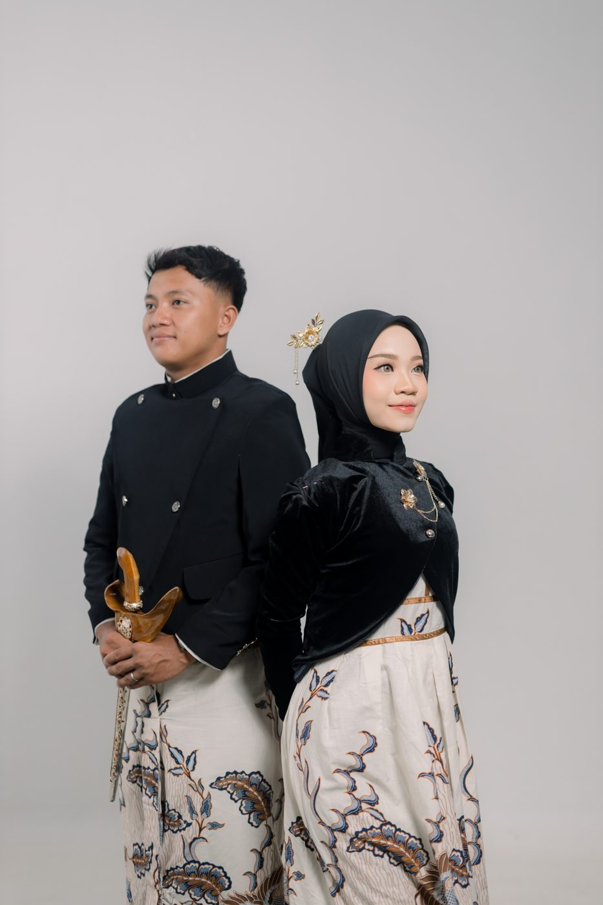
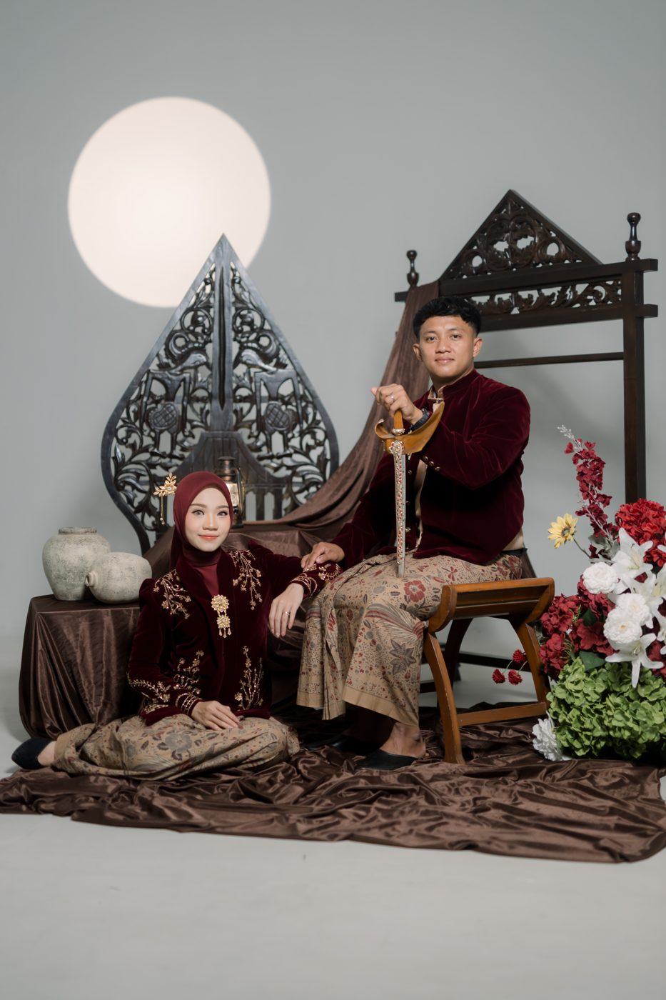
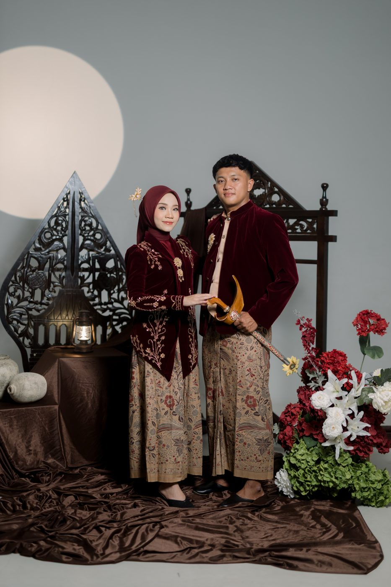

The Groom
RokhimanSodiq, S.Pd.
❀Putra dari pasangan
Bapak Muh. Arofiq & Ibu Sri Winarti
📍Dk. Banaran RT 03/RW 02, Ds. Babadan, Kec. Limpung, Kab. Batang
Memuat undangan0%
Sugeng Rawuh
— selamat datang, semoga kita semua senantiasa dalam keselamatan —
Kanthi asmaning Gusti Allah ingkang Maha Welas Asih, kawula ngaturaken pambage dhumateng Bapak/Ibu/Sadherek sedaya, anggenipun badhe nindakaken pahargyan pawiwahan putra-putri kawula.
Dengan menyebut nama Allah Yang Maha Pengasih, kami mengundang Bapak/Ibu/Saudara/i untuk hadir dalam pernikahan putra-putri kami.
Sinaosa wonten ing donya punika katah warni, Gusti Allah paring pasangan saking ing jiwa piyambak, supados manggih ayem tentrem, sarta tuwuh katresnan lan kawelasan ing antawisipun.
Dan di antara tanda-tanda kekuasaan-Nya ialah Dia menciptakan pasangan untukmu dari jenismu sendiri, agar kamu merasa tenteram kepadanya, dan dijadikan-Nya di antaramu rasa kasih dan sayang.
QS. Ar-Rum : 21Dengan memohon rahmat & ridha Allah SWT, kami mempersembahkan
Putra dari pasangan
Bapak Muh. Arofiq & Ibu Sri Winarti
📍Dk. Banaran RT 03/RW 02, Ds. Babadan, Kec. Limpung, Kab. Batang
Putri dari pasangan
Bapak Makhsun & Ibu Sarini
📍Dk. Kepatihan RT 02/RW 02, Ds. Tersono, Kec. Tersono, Kab. Batang
Ikuti rute perjalanan hari bahagia kami
Kediaman Mempelai Wanita
Dk. Kepatihan RT 02/RW 02, Ds. Tersono, Kec. Tersono, Kab. Batang
⏰08.00 WIB
Ijab Qabul
Kediaman Mempelai Wanita · Dk. Kepatihan RT 02/RW 02, Ds. Tersono, Kec. Tersono, Kab. Batang
⏰13.00 WIB – Selesai
Pahargyan Dhaup
Kediaman Mempelai Wanita · Dk. Kepatihan RT 02/RW 02, Ds. Tersono, Kec. Tersono, Kab. Batang
Kediaman Mempelai Pria
Dk. Banaran RT 03/RW 02, Ds. Babadan, Kec. Limpung, Kab. Batang
Setiap detik terasa berarti
saat menanti hari bahagia
Sepenggal cerita kami dalam bingkai
Ketuk foto untuk memperbesar
Setiap langkah membawa kami pada satu tujuan

✨Kami dipertemukan dalam sebuah acara kampus di Yogyakarta. Sebuah senyum sederhana menjadi awal semuanya.

💬Perjalanan, diskusi panjang, dan doa bersama menumbuhkan keyakinan bahwa kami saling melengkapi.

💍Dengan restu kedua keluarga, Iman datang melamar Rifa dalam suasana penuh haru dan kebahagiaan.

🕊️Dengan ridha Allah SWT dan doa restu Bapak/Ibu/Saudara/i, kami melangkah ke jenjang pernikahan.
Kehadiran & doa Anda adalah hadiah terindah bagi kami
Doa restu Anda merupakan karunia terindah bagi kami. Namun bila berkenan memberikan tanda kasih, dapat melalui:
Merupakan suatu kehormatan dan kebahagiaan bagi kami apabila Bapak/Ibu/Saudara/i berkenan hadir dan memberikan doa restu kepada kedua mempelai.
Kami yang berbahagia
Wassalamu'alaikum Warahmatullahi Wabarakatuh